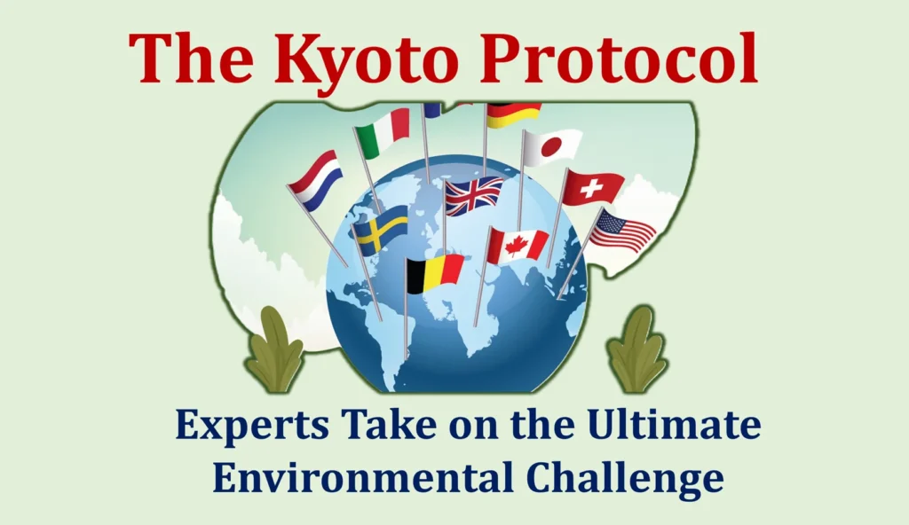

Key Climate Agreements
International climate agreements play a crucial role in addressing global environmental challenges by setting legally binding targets and fostering cooperation among nations. Three landmark treaties—the Kyoto Protocol, the Paris Agreement, and the Montreal Protocol—have significantly shaped global efforts to combat climate change.
The Kyoto Protocol introduced the first legally binding commitments for developed nations to reduce greenhouse gas emissions. The Paris Agreement built upon this by uniting countries in a collective effort to limit global temperature rise. Meanwhile, the Montreal Protocol has been instrumental in protecting the ozone layer by phasing out harmful substances. Together, these agreements demonstrate the international community’s commitment to environmental sustainability.
Kyoto Protocol (1997)
The Kyoto Protocol, adopted on December 11, 1997, and enforced on February 16, 2005, was the first legally binding international treaty to reduce greenhouse gas (GHG) emissions. It introduced mandatory reduction targets for developed countries based on the principle of "common but differentiated responsibilities and respective capabilities" (CBDR-RC).
Read MoreKyoto Protocol (1997)
The Kyoto Protocol, adopted on December 11, 1997, and enforced on February 16, 2005, was the first legally binding international treaty to reduce greenhouse gas (GHG) emissions. It introduced mandatory reduction targets for developed countries based on the principle of "common but differentiated responsibilities and respective capabilities" (CBDR-RC).
The first commitment period (2008–2012) required 37 industrialized nations and the EU to reduce emissions by 5% below 1990 levels. The Doha Amendment (2012) introduced a second commitment period (2013–2020) with an enhanced reduction target of at least 18% below 1990 levels.
Key mechanisms of the Kyoto Protocol:
- International Emissions Trading (IET) – Allowing the trading of emission permits.
- Clean Development Mechanism (CDM) – Supporting green projects in developing nations.
- Joint Implementation (JI) – Enabling countries to invest in emission reduction projects abroad.
Despite its achievements, the protocol was weakened due to major emitters like the United States refusing to ratify it. It was eventually superseded by the Paris Agreement, which includes all countries in the fight against climate change.
It was the first step towards global climate action.
Paris Agreement (2015)

The Paris Agreement is a landmark international treaty adopted on December 12, 2015, at the UN Climate Change Conference (COP21) in Paris. It represents a global commitment to combat climate change and mitigate its devastating impacts. The agreement's primary goal is to limit global temperature rise to well below 2°C above pre-industrial levels while pursuing efforts to restrict the increase to 1.5°C.
Read MoreParis Agreement (2015)
The Paris Agreement is a landmark international treaty adopted on December 12, 2015, at the UN Climate Change Conference (COP21) in Paris. It represents a global commitment to combat climate change and mitigate its devastating impacts. The agreement's primary goal is to limit global temperature rise to well below 2°C above pre-industrial levels while pursuing efforts to restrict the increase to 1.5°C. This is crucial for reducing climate risks such as extreme weather, rising sea levels, and ecosystem disruptions.
The agreement functions on a five-year cycle, where nations submit updated Nationally Determined Contributions (NDCs)—outlining their emission reduction plans and adaptation strategies. The first "global stocktake" in 2023, held at COP28, assessed global progress and reinforced commitments toward phasing out fossil fuels in favor of renewable energy.
Recognizing the disparities in resources among countries, the Paris Agreement establishes a financial support system for developing nations to help them mitigate emissions, enhance resilience, and adapt to climate impacts. Developed nations play a key role in funding and technological support. Furthermore, the agreement enforces a transparent framework for monitoring and reporting emissions, ensuring accountability in climate commitments.
The Paris Agreement came into force on November 4, 2016, and has been ratified by 195 Parties (194 states and the European Union), marking a collective global effort to transition towards a net-zero emissions world and achieve the Sustainable Development Goals (SDGs).
Montreal Protocol
The Montreal Protocol on Substances that Deplete the Ozone Layer, adopted on September 16, 1987, is a highly successful environmental treaty aimed at phasing out ozone-depleting substances (ODS), such as chlorofluorocarbons (CFCs) and hydrochlorofluorocarbons (HCFCs).
Read MoreMontreal Protocol
The Montreal Protocol on Substances that Deplete the Ozone Layer, adopted on September 16, 1987, is a highly successful environmental treaty aimed at phasing out ozone-depleting substances (ODS), such as chlorofluorocarbons (CFCs) and hydrochlorofluorocarbons (HCFCs).
Ratified universally by 198 parties, the treaty has implemented a stepwise reduction in ODS production and consumption. The Multilateral Fund, established in 1991, provides financial and technical support to developing countries.
Key amendments:
- Montreal Amendment (1997) – Accelerated phase-out of HCFCs.
- Kigali Amendment (2016) – Introduced hydrofluorocarbon (HFC) phase-down, addressing their high global warming potential (GWP).
By phasing out 98% of ODS, the Montreal Protocol has prevented millions of skin cancer cases, helped restore the ozone layer, and significantly contributed to climate mitigation. The treaty is regarded as one of the most successful global environmental agreements.